선택하면 다음 영상이 이어지는 게임
영상이 만든 건 선택지를 고를 때마다 다음 영상이 재생되는 좀비 게임이에요. 플레이어는 고르기만 하고, 도망치고 싸우고 동료를 구하는 행동은 전부 AI(Artificial Intelligence) 영상으로 보여 줘요.
본보기는 Telltale Games의 The Walking Dead예요. 슬라이드 아래쪽 계산식을 보면 첫 시즌 에피소드 850만 개 이상에 편당 약 5달러를 곱해서 4천만 달러, 약 530억 원을 내요. 판매액을 직접 밝힌 숫자가 아니라 곱해서 낸 값이에요.
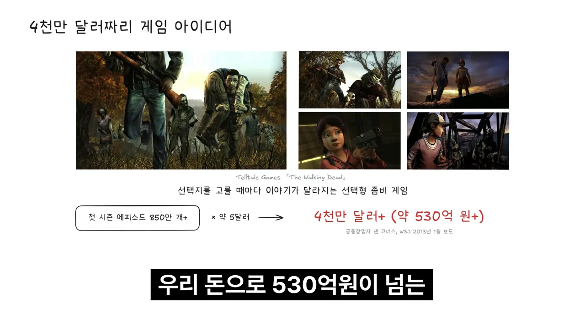
발표자는 이 게임이 코로나 때 유행했다고 말해요. 그런데 슬라이드의 출처는 2013년 1월 보도라서 시기가 맞지 않아요. 숫자는 슬라이드를 기준으로 보는 게 좋아요.
게임 한 판의 구조
왼쪽 그림의 영상 끝에 숨는다, 달린다, 돌아선다가 떠요. 여기서 달린다를 고르면 오른쪽처럼 개찰구로 뛰는 다음 장면이 바로 재생돼요.
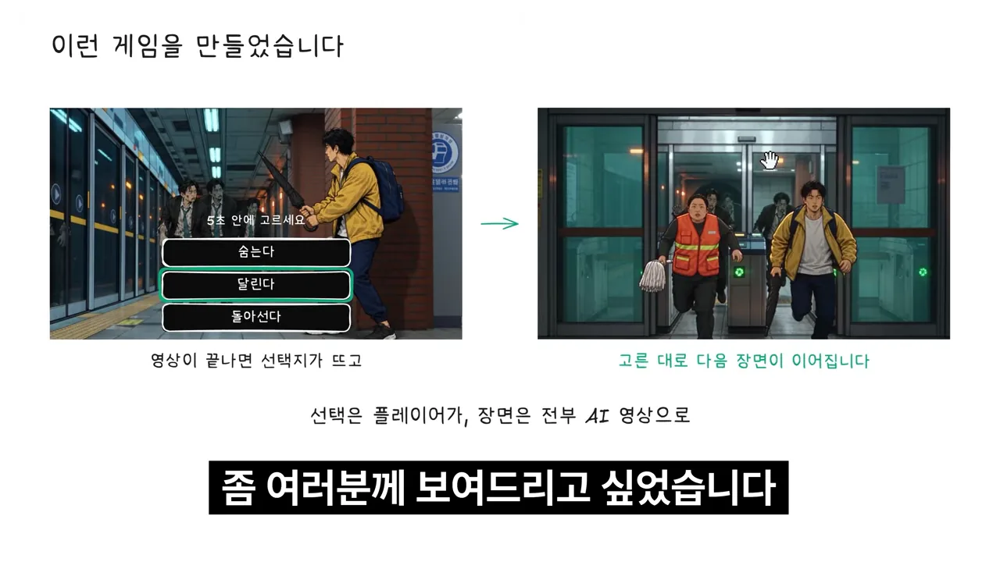
이 흐름을 한 장에 그리면 아래와 같아요. 영상 끝에 여유를 남기고, 그 위에 선택지를 올리고, 고른 쪽의 영상을 재생해요. 다음 영상은 앞 영상의 마지막 프레임에서 시작하고요.
원래라면 오브젝트를 전부 3D 에셋으로 만들고 코드로 움직여야 해요. 발표자는 이미지·영상 생성이 좋아진 덕분에 그 과정을 우회할 수 있다는 걸 보여 주려고 이 게임을 골랐다고 해요.
가성비 모델 둘, 단가는 10배 차이
이번 비교는 지난 영상의 후속이에요. 슬라이드 왼쪽이 지난번으로, 프런티어 모델인 GPT(Generative Pre-trained Transformer) Astra와 Claude Opus 5.5로 영상 한 편을 만들어 Claude 쪽에 점수를 조금 더 줬어요. 오른쪽 초록 칸이 이번 조건이에요. 가성비 모델로 게임 하나를 통째로 만들어요.
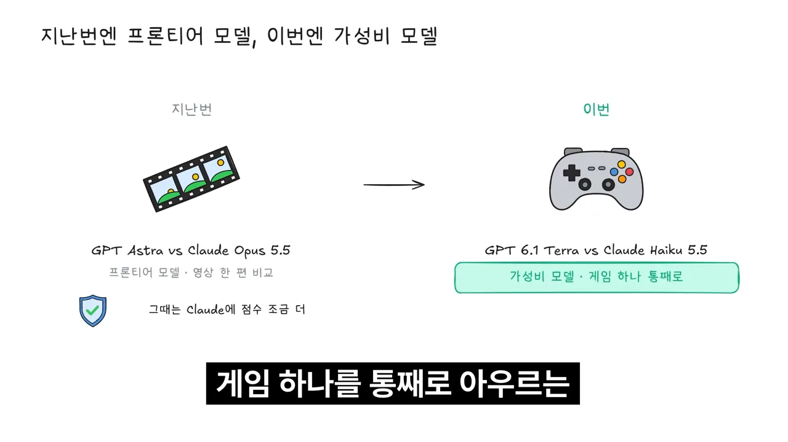
같은 시나리오를 줘도 결과는 꽤 달라요. 아래 비교 화면에서 왼쪽 Haiku는 남자 주인공과 미화원 동료가 한 화면에 잡히고, 오른쪽 Terra는 주인공이 여자이고 카메라 구도도 달라요.
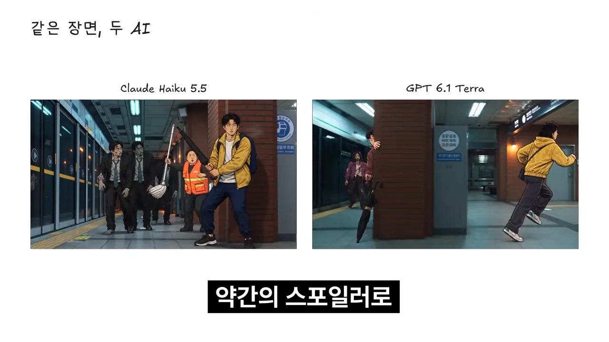
단가와 의심
가격 슬라이드의 왼쪽 카드 맨 아래를 보면 Haiku 단가에 '입력 10만 토큰 이하'라는 조건이 작게 붙어 있어요. 발표자가 '내려갈 수 있다'고 말한 이유예요. 아래쪽 빨간 글씨는 흔한 의심을 적은 거예요. 싸도 다시 만들어야 하면 돈과 시간이 더 든다는 뜻이죠.
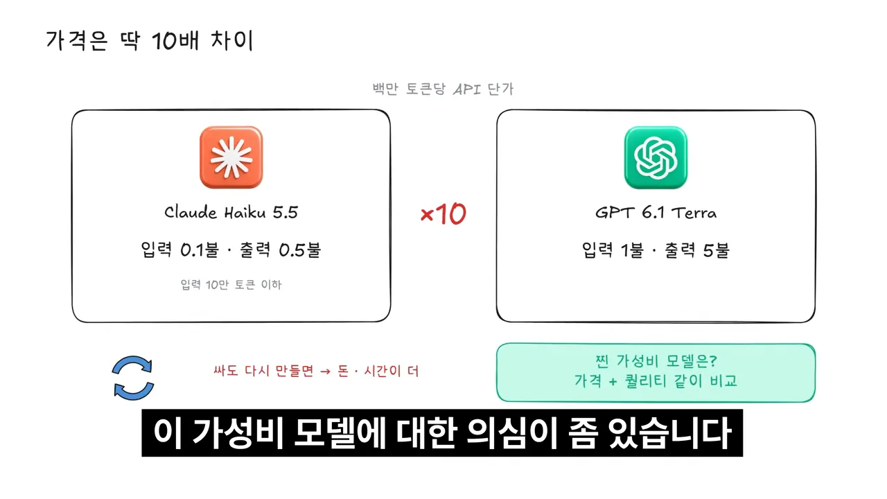
다만 발표자는 가격과 품질을 함께 비교하겠다고 해 놓고, 게임 하나에 실제로 얼마가 들었는지는 밝히지 않아요. 영상에 나오는 비교는 단가와 결과물의 인상까지예요.
시나리오, 그림체, 도구 연결
발표자가 처음에 준 재료는 이 슬라이드에 다 있어요. 맨 왼쪽 칸이 시청역 탈출이라는 베이스 시나리오이고, 그다음 사진이 승강장, 개찰구, 출구 계단, 맨 오른쪽이 그림체 기준이에요.
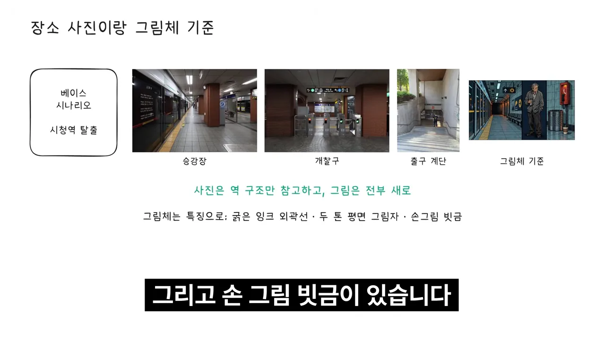
그림체는 '텔테일 같은 느낌'이라고만 하지 않고 특징으로 적었어요. 굵은 잉크 외곽선, 두 톤 평면 그림자, 손그림 빗금이에요. 애니메이션도 3D도 아닌 그 사이의 거친 화풍을 노렸다고 해요.
Artlist를 MCP로 연결
이미지와 영상은 Artlist에서 만들고, 모델은 MCP(Model Context Protocol)로 Artlist에 붙였어요. 아래 화면은 Artlist의 MCP 안내 페이지예요. 가운데 Claude, ChatGPT, VS(Visual Studio) Code 탭에서 쓸 곳을 고르고 Connect MCP를 눌러요. 이어서 Artlist 계정으로 로그인하면 연결돼요.
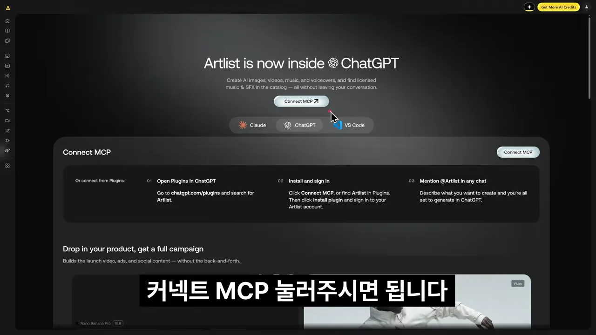
아래 구성도가 실험 조건이에요. 왼쪽 두 칸만 달라요. Codex에서 쓰는 GPT 6.1 Terra와 Claude Code에서 쓰는 Claude Haiku 5.5가 같은 Artlist 계정에 붙어요. 오른쪽의 GPT Image 2.5 Sunburst와 Seedance 2.5는 똑같아요.
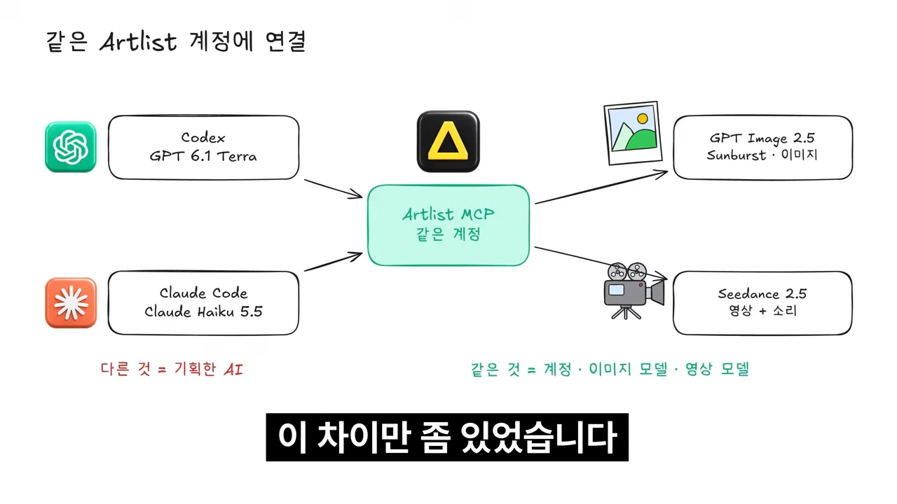
영상 모델은 Seedance 2.5가 크레딧은 더 들지만 살짝 낫다고 봐서 골랐대요. 취향에 따라 Kling 4.0이나 Wan을 써도 된다고 해요.
같은 시나리오, 두 번의 플레이
발표자는 만드는 법보다 플레이를 먼저 보여 줘요. 두 게임 모두 '밤을 달리다'라는 같은 제목으로 시작해요.
Haiku판: 그림체는 안정, 전환은 어색
첫 장면은 주인공 얼굴을 가까이 잡아요. 굵은 외곽선과 평면 그림자가 처음에 지정한 그림체에 잘 맞아요. 얼굴 앞의 붉은 곡선은 발표자가 화면에 그린 표시예요. 터널 안쪽의 빨간 점 두 개도 함께 보세요.
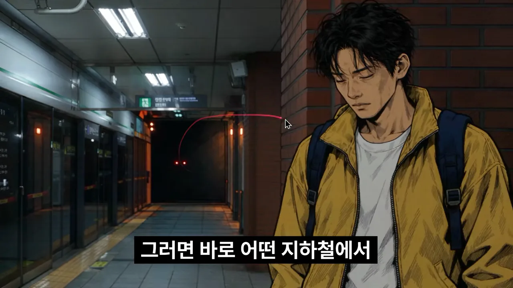
달린다를 고른 다음 장면이에요. 발 앞의 넘어진 안전콘과 오른쪽 미화원을 보세요. 발표자가 좋았다고 꼽는 대목이에요. 소품이 그냥 놓여 있지 않고 추격에 쓰여요.
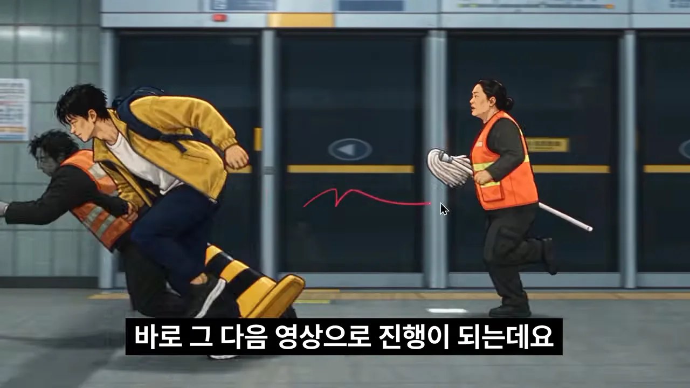
문제는 그다음이에요. 계단으로 올라간다를 골랐는데 발표자 말로는 내려가는 흐름이 나오고 날씨도 바뀌어요. 아래 화면은 갑자기 밝은 하늘 아래의 출구 계단이에요. 앞 장면은 어두운 승강장이었어요.
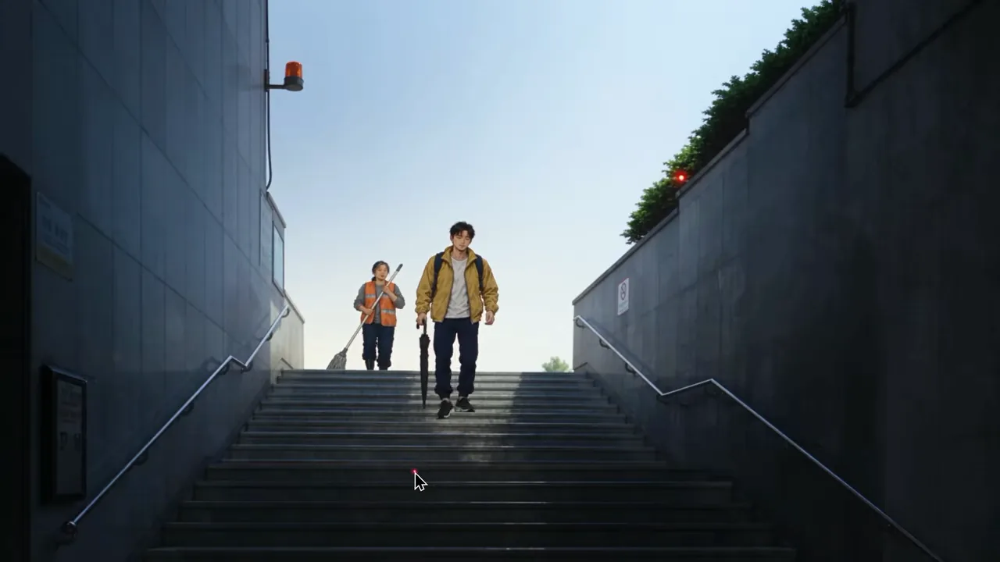
대신 위기 장면은 강렬해요. 오른쪽 벽 위에서 빨간 후드 좀비가 덮치고, 주인공이 우산을 뻗어 막아요.
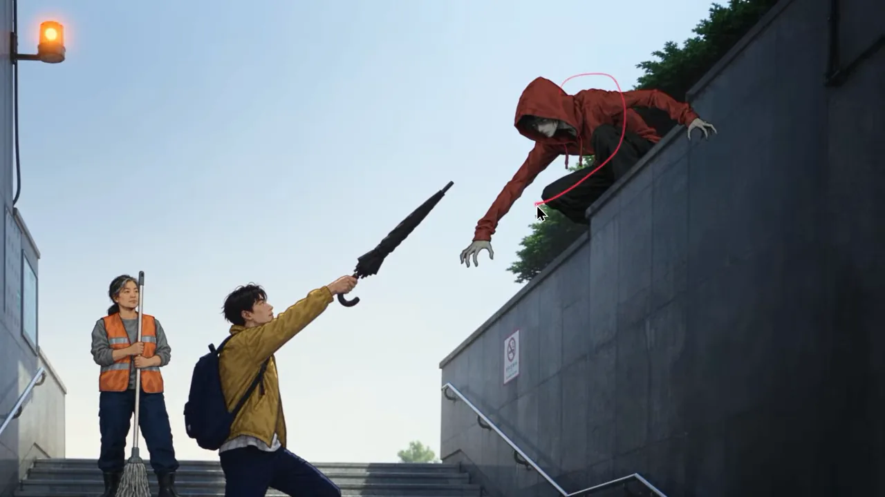
선택지는 이렇게 장면 위에 얹혀요. 아래쪽에 '5초 안에 고르세요'와 손을 잡는다, 혼자 빠져나간다, 계단을 뛰어 내려간다가 보여요. 셔터 밑으로 끌려가는 동료를 구할지 말지 고르는 순간이에요.
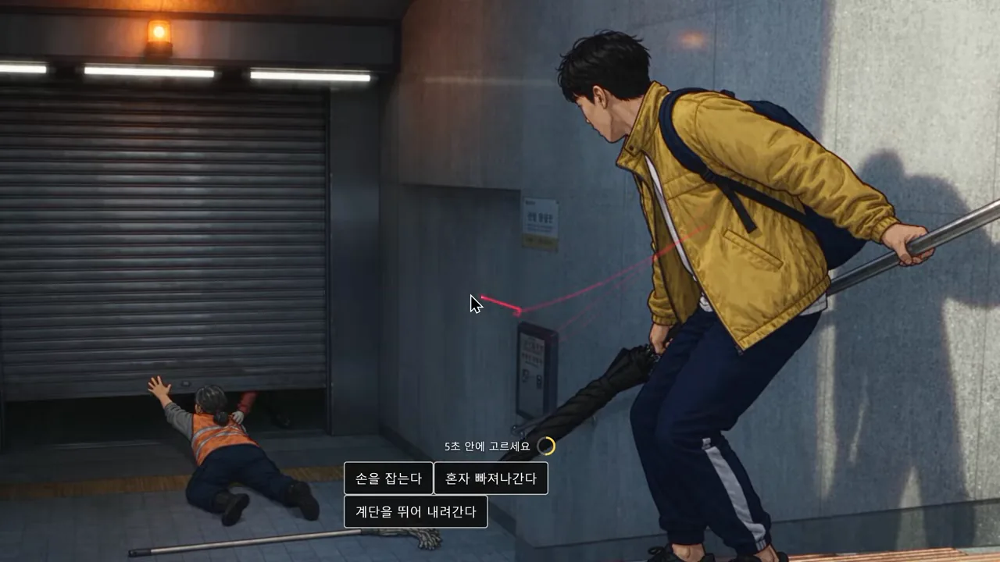
동료를 구해 올라오면 위에서 내려다본 도시가 나와요. 횡단보도 곳곳에 사람과 좀비가 흩어져 있고, 버스와 경찰차가 멈춰 있어요.
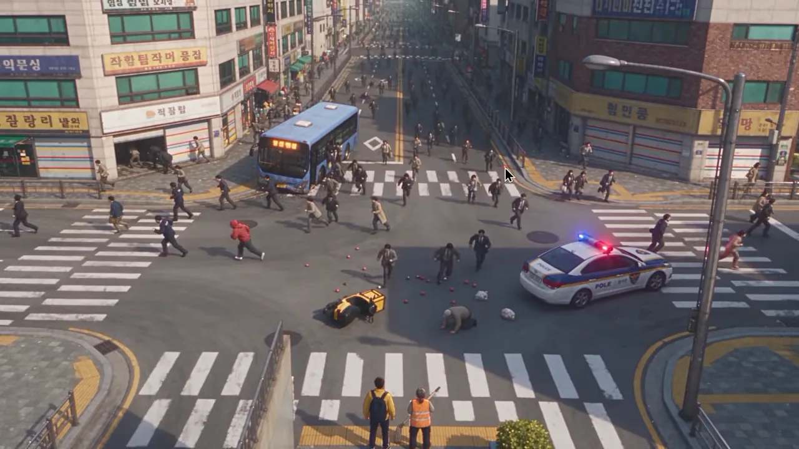
Terra판: 논리는 좋은데 실사로 흘러요
Terra판 시작 화면을 보면 제목은 같은데 오른쪽 주인공이 여자로 바뀌었어요. 여기서는 여자가 주인공이고 남자가 조력자예요.
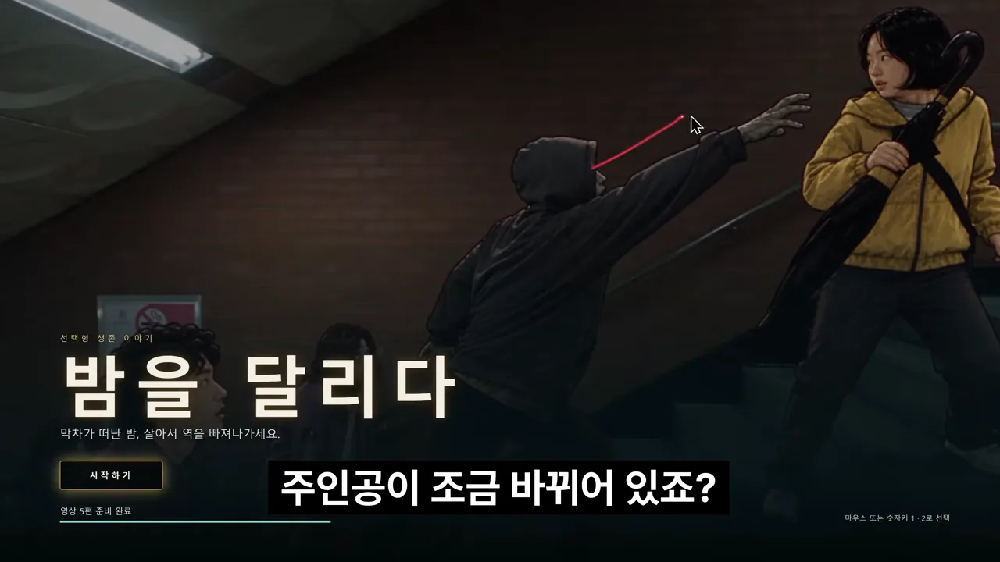
초반은 애니메이션 느낌이에요. 왼쪽 안쪽에서 좀비들이 오고 주인공은 오른쪽으로 뛰어요. 발표자는 좀비가 더 사실적이고 선택지도 분명하다고 평가해요. 다만 조력자는 앞뒤 설명 없이 갑자기 튀어나와요.
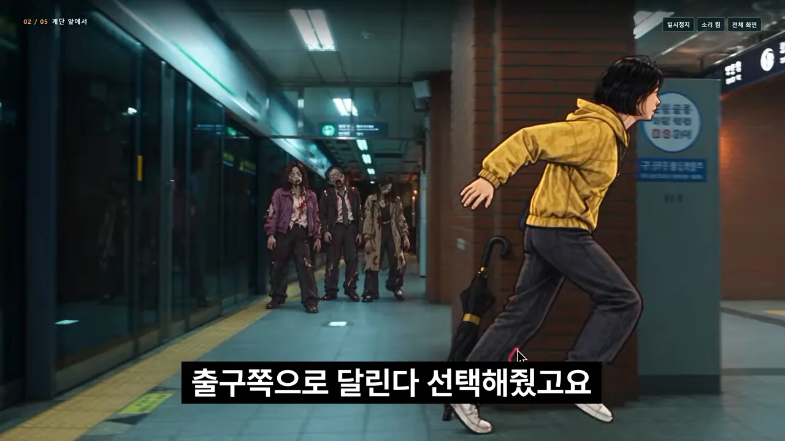
계단 장면에서는 외곽선이 약해지고 인물과 옷의 질감이 사진처럼 바뀌어요. 위 장면과 비교하면 후드의 주름이 그림보다 실제 옷에 가까워요. 이 변화가 뒤의 총평에서 Terra의 가장 큰 감점이에요.
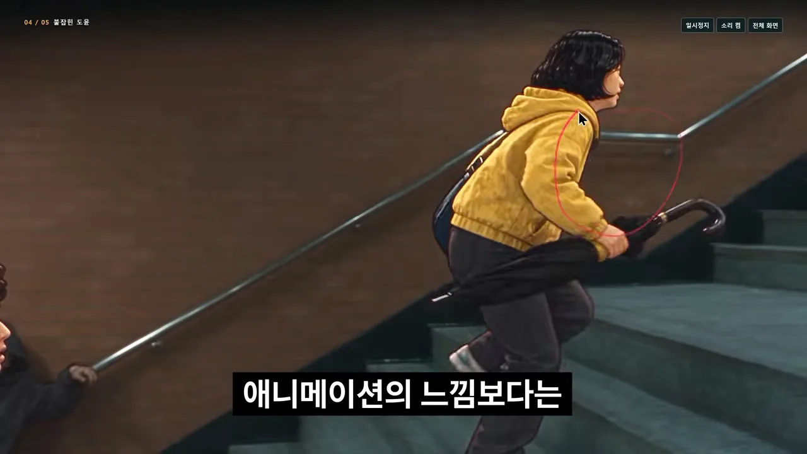
결말은 Haiku와 비슷해요. 다만 Terra는 불타는 밤거리로 끝나요. 도로 위의 구급차와 경찰차, 불길까지 거의 실사 영화 같은 화면이에요.
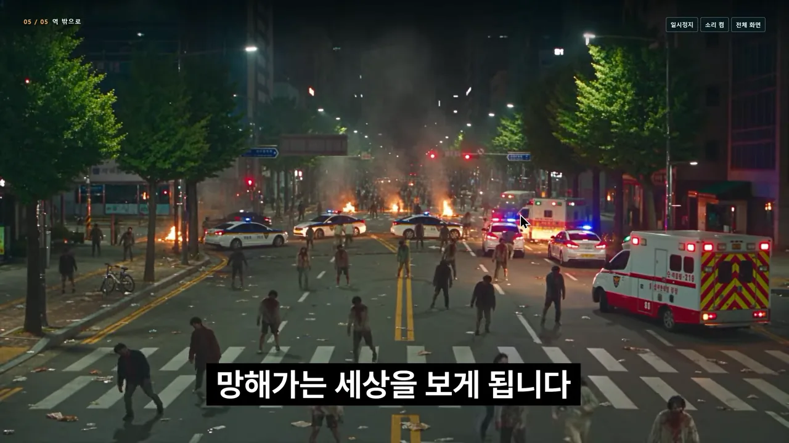
설계에서 갈린 점
두 게임 모두 대화 하나 안에서 이미지, 영상, 게임까지 처리했어요. 슬라이드 오른쪽을 보면 결과물은 바로 프로젝트 폴더로 들어오고, 받아서 다시 올리는 과정이 없어요. 그 아래 가격표 그림은 큰 생성은 견적부터 받는다는 뜻이에요.
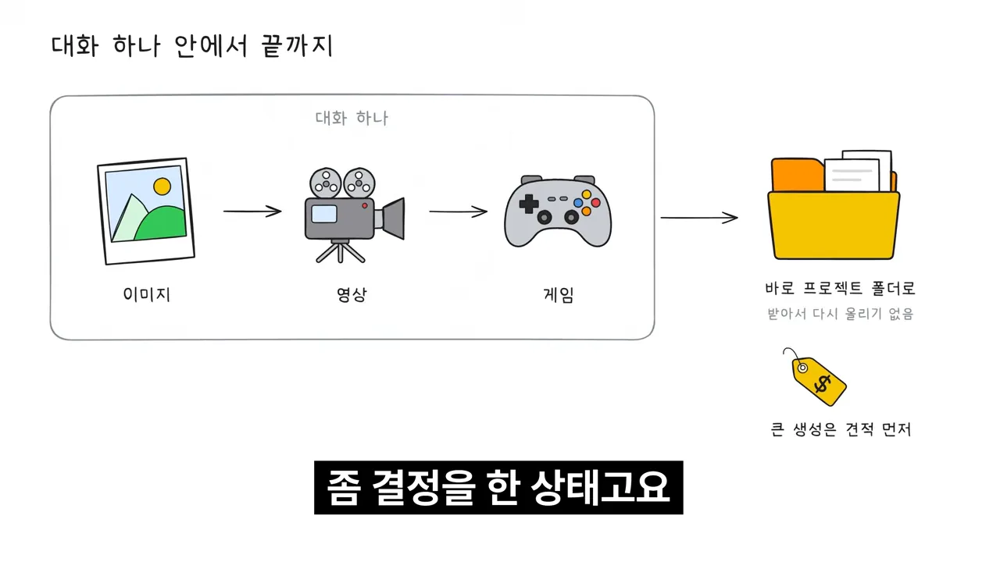
발표자가 가장 중요했다고 꼽는 건 설계예요. 아래 슬라이드의 흐름, 승강장에서 달린다를 골라 개찰구로, 계단으로 올라간다를 골라 출구 계단으로 가는 맥락까지만 정해 줬어요. 위쪽 문서 칸의 장면과 선택지, 인물과 소품, 장면마다의 시작·끝 상태는 모델이 짜게 했고요.
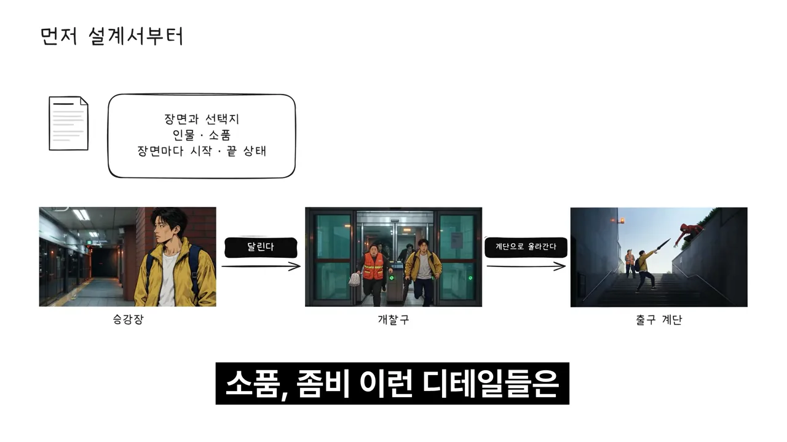
도망가는 방향
첫 차이는 방향 규칙이에요. 사진 아래 글을 비교해 보세요. Haiku는 좀비가 안쪽 터널에서 오고 사람은 늘 반대쪽, 개찰구와 출구로 도망친다고 적었어요. 반대쪽이 화면의 어디인지는 정하지 않았어요. Terra는 좀비는 화면 왼쪽, 사람은 화면 오른쪽이라고 못박았어요.
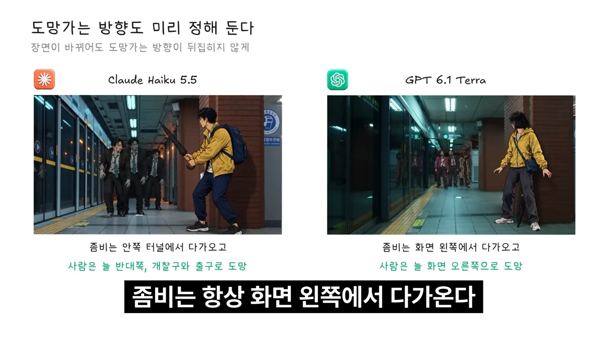
실제 Terra 영상에서 규칙이 지켜지는지 볼까요. 왼쪽 끝에 좀비, 그 오른쪽에 조력자와 주인공이 같은 방향으로 달려요.
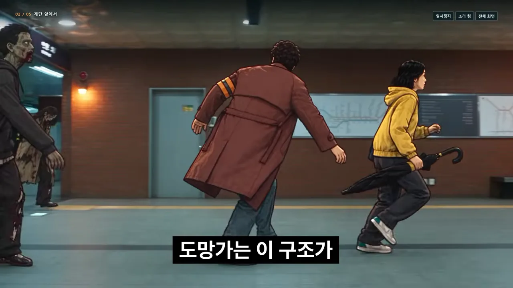
인물과 좀비
캐릭터 시트에서도 설계가 갈려요. 왼쪽 Haiku는 노란 바람막이에 백팩을 멘 주인공과 야간 미화원, 좀비 3종을 뒀어요. 오른쪽 Terra는 한지안(20대 후반)과 서도윤(30대 남성)에 좀비 2명으로 더 단순해요.
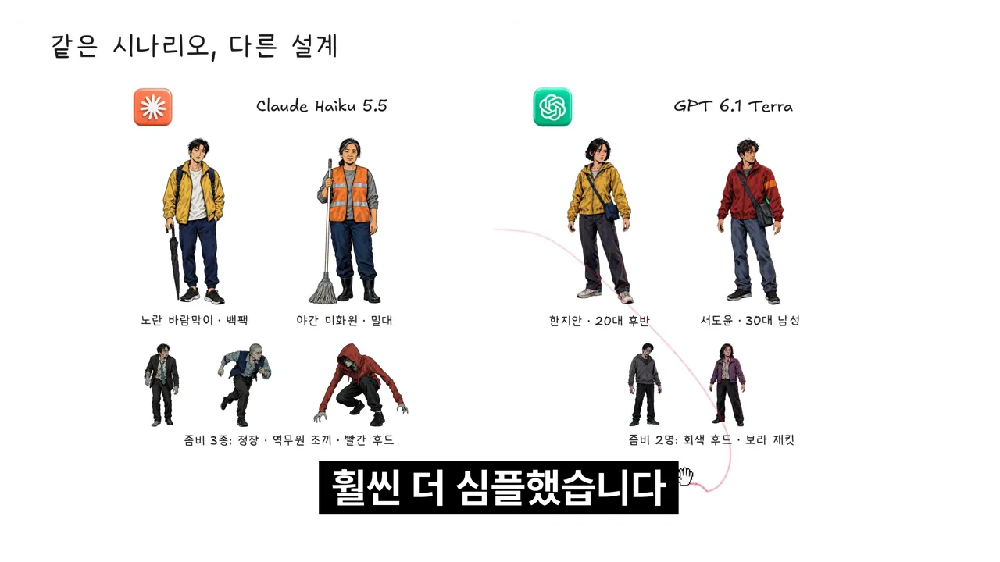
발표자는 Terra의 좀비가 더 사실적이었다고 기억해요. 그런데 인상은 Haiku의 빨간 후드가 더 강렬했고, 조력자를 붙잡는 장면도 좋았다고 해요. 이 항목은 Haiku에 점수를 줘요.
소품
슬라이드 왼쪽 네 개가 Haiku가 설계한 소품이에요. 우산, 밀대, 소화기, 안전콘이고, 전부 실제 장면에서 쓰였어요. 오른쪽 장면처럼 안전콘으로 좀비를 넘어뜨리고, 밀대로 치고, 소화기로 물리쳐요. 왼쪽 아래 작은 메모는 인물 디자인만큼은 Terra가 조금 낫다는 평가예요.
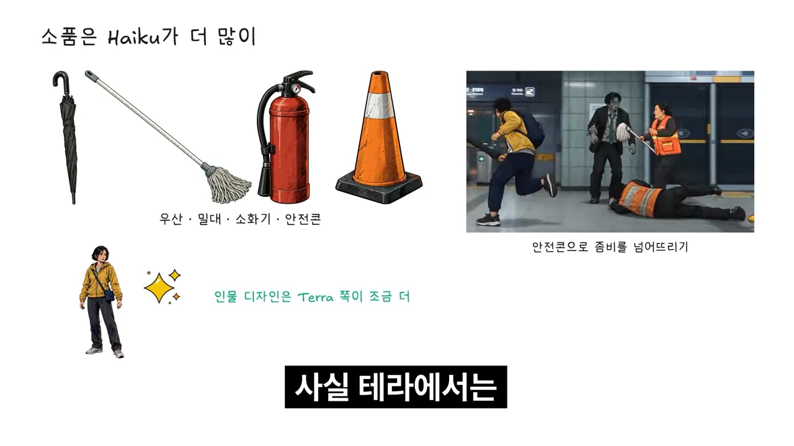
영상 프롬프트를 쓰는 법
만든 이미지를 레퍼런스로 삼아 영상을 만드는 단계예요. 프롬프트는 슬라이드의 8칸으로 나눴어요. 영어 이름까지 그대로 쓰면 작업지시서 틀로 바로 가져다 쓸 수 있어요.
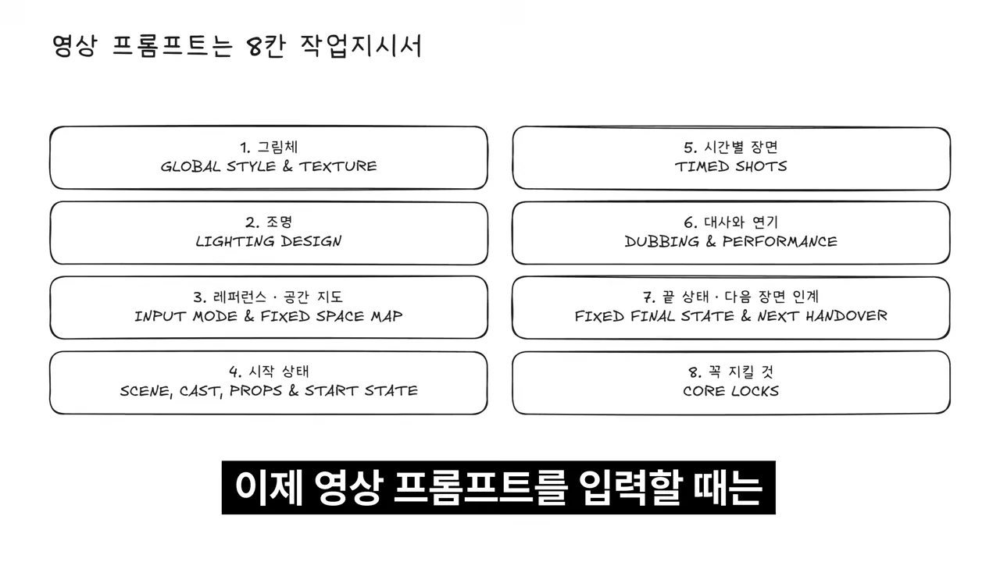
7번을 그림으로 보면 이래요. 왼쪽이 앞 장면의 마지막 프레임, 오른쪽이 다음 장면의 첫 프레임인데 똑같은 그림이에요. 보통 이 장면에서 선택지가 뜨니까, 다음 영상은 여기서부터 시작해야 이어져 보여요. 그래서 마지막 프레임을 잘라 첫 프레임으로 넘기도록 작업지시서에 넣어 뒀어요.
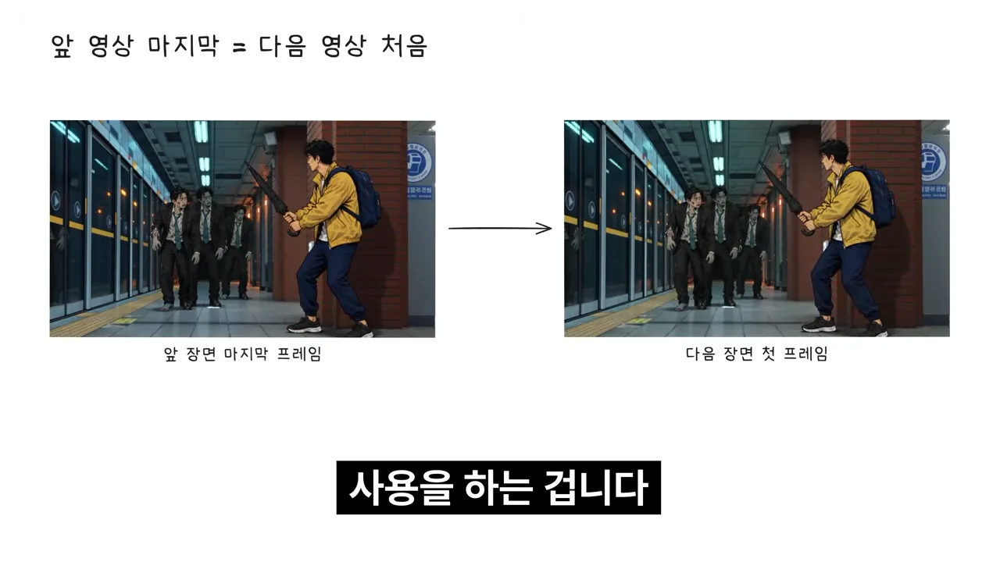
제일 센 장면은 몇 초에 나오나
영상이 지루하면 게임이 재미없어지니, 발표자는 이 질문을 기준으로 삼았어요. 왼쪽 첫 버전은 타임라인을 보면 6~7초에야 좀비 실루엣이 보이고, 13초가 넘어서야 가까이 와요. 오른쪽 고친 버전은 5초에 등장하고, 그 뒤 초록 선만큼 반응할 시간이 생겨요.
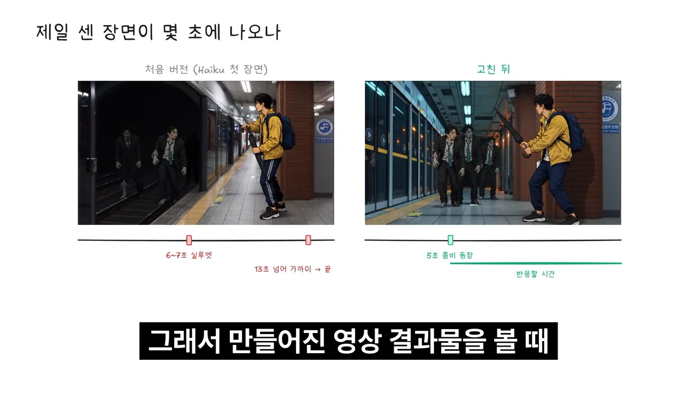
레퍼런스는 역할로, 조명은 비율로
Artlist에서는 @로 레퍼런스에 태그를 달 수 있어요. 슬라이드처럼 번호마다 역할을 줘요. img1은 그림체, img2는 전신이라 옷과 체격, img3은 얼굴 근접, img6은 역 사진이라 구조만이에요. 아래 막대가 조명이에요. '어둡게', '밝게' 대신 우산 금속 1.5, 피부 0.5, 옷 0.3으로 밝기 순서를 줬어요.
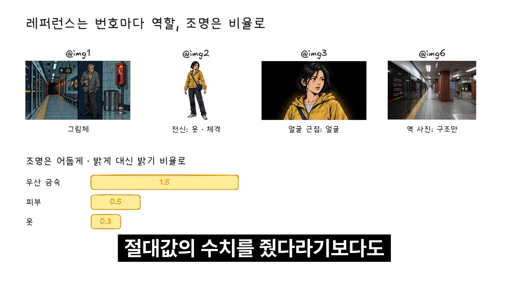
금지 대신, 있어야 할 자리
발표자의 프롬프트는 네거티브 프롬프트보다 긍정 프롬프트가 훨씬 많아요. 슬라이드 왼쪽 위 '열차 금지'에 빨간 X가 있고, 그 아래 초록 문장 두 개가 대신 쓴 표현이에요. 오른쪽 장면을 보면 복도 안쪽 멀리 빨간 불빛 두 개만 보여요.
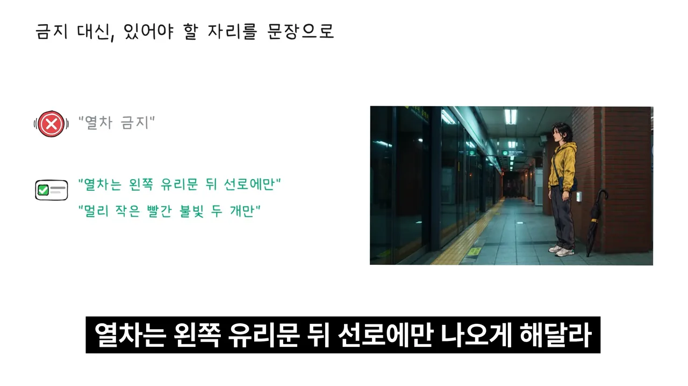
Terra 첫 장면에 준 피드백
왼쪽 첫 결과는 좀비가 걸어오는데 주인공들도 걸어서 도망가요. 긴장감이 없어요. 그래서 위쪽 노란 메모처럼 '더 다급하게, 동료는 갑자기'를 요청했고, 가운데 결과가 나왔어요. 동료가 등장하는 방식은 여전히 어색하지만 발표자는 그대로 쓰기로 했어요. 오른쪽 메모는 끝을 선택 직전에 멈추게 한 지시예요. 여유가 있어야 그 위에 선택지를 올릴 수 있거든요.
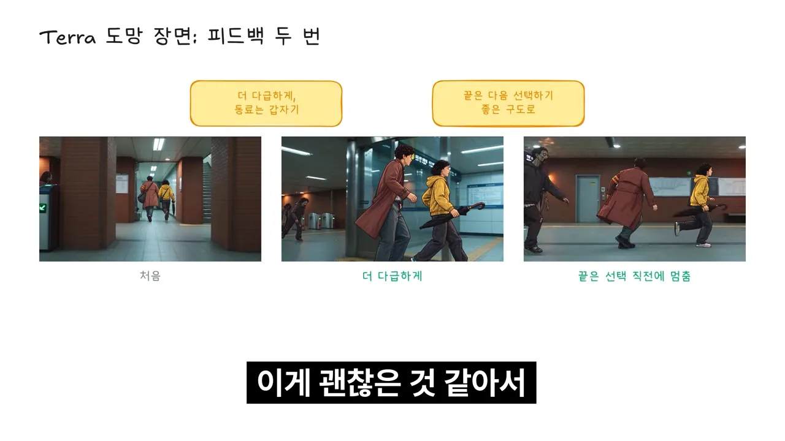
장면 잇기는 모델마다 달랐어요
윗줄 Terra의 세 장면 사이에는 사슬 아이콘이 둘 다 이어져 있어요. 마지막 프레임을 끝까지 이어 붙였다는 뜻이에요. 아랫줄 Haiku는 두 번째 칸 뒤에서 사슬이 끊겨요. 계단 장면에서 끊고 레퍼런스를 다시 넣어 새 장면으로 갔어요.
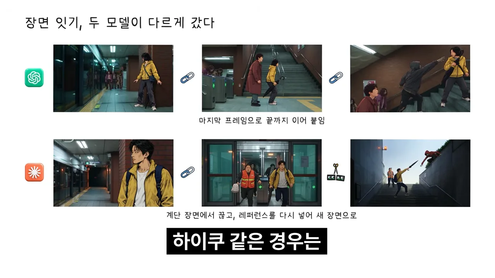
영상에 쓴 프롬프트는 발표자가 자기 블로그에 공개하겠다고 해요.
총평과 남은 숙제
총평 슬라이드는 짧아요. 왼쪽 Haiku는 초록 글씨로 원했던 애니메이션 질감을 끝까지 지켰고, 아래에 중간 화면 전환 논리가 갸우뚱하다고 적혀 있어요. 오른쪽 Terra는 전체 논리가 좋았지만 질감이 갈수록 실사 쪽으로 갔어요.
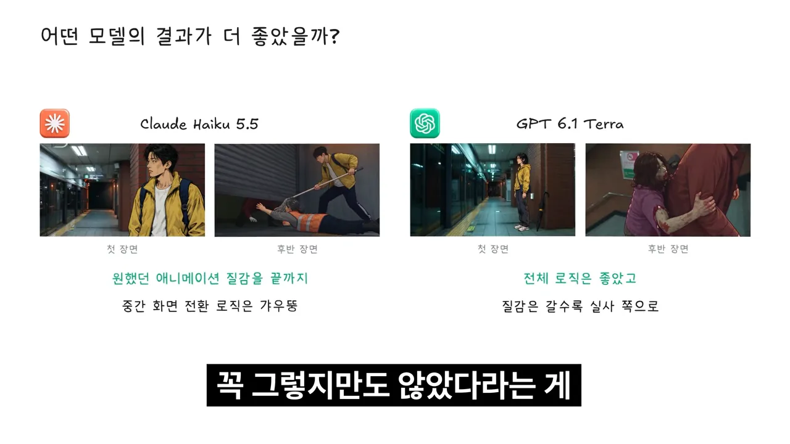
영상 전체에서 발표자가 매긴 항목을 모으면 이래요. 점수표는 발표자가 따로 만든 게 아니라, 말한 평가를 제가 모은 거예요.
| 항목 | 더 나았던 쪽 | 근거 |
|---|---|---|
| 그림체 유지 | Haiku | 애니메이션 질감을 끝까지 유지, Terra는 갈수록 실사로 |
| 소품 활용 | Haiku | 우산·밀대·소화기·안전콘을 실제 장면에 씀 |
| 위협적인 장면 | Haiku | 빨간 후드 좀비와 조력자를 붙잡는 장면 |
| 도망 방향 규칙 | Terra | 좀비는 왼쪽, 사람은 오른쪽으로 고정 |
| 지시 지키기 | Terra | 열차를 정해 준 자리에만 둠, Haiku는 복도를 지름 |
| 장면 연결 | Terra | 마지막 프레임을 끝까지 이어 붙임 |
| 인물 디자인 | Terra | 근소한 차이라고 평가 |
두 모델의 차이는 아래 장면에서 한눈에 보여요. 같은 '동료 구하기'인데, 왼쪽 Haiku는 밀대를 쥔 그림체이고 오른쪽 Terra는 실사에 가까운 얼굴과 옷이에요.
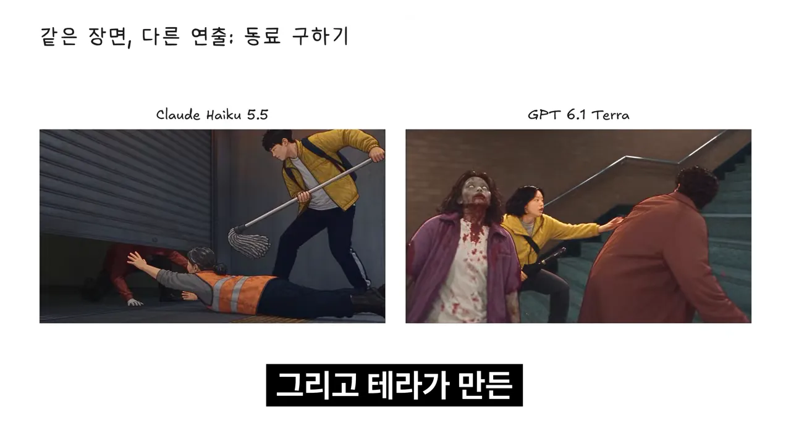
조건도 함께 봐야 해요. 발표자는 원샷으로 가장 잘 만드는 모델을 보려고 중간에 방향을 다시 잡지 않았다고 말해요. 그런데 앞에서 본 것처럼 첫 장면에는 피드백을 줬어요. 그림체 방향은 안 고쳤다는 뜻으로 읽는 게 맞아 보여요. 발표자는 '실사 금지, 애니메이션 풍으로'를 더 엄격하게 썼다면 Terra가 나았을 거라고 봐요. 등급상 Terra가 압승해야 하는데 그렇지 않았다는 점이 그에게도 의외였어요.
이 방식의 한계
한국어가 살짝 깨져 나오거나 원한 방향과 조금 어긋나는 일이 있었다고 해요. 발표자는 3D 에셋으로 만들면 이런 부분을 훨씬 정교하게 다룰 수 있다고 봐요. 그래도 영상 품질이 더 좋아지면 이런 선택형 게임은 아이디어만 있어도 누구나 시도할 수 있다는 게 결론이에요.